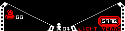
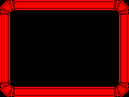

| Objects: every graphic |
Every one of the 132 graphic numbers. An object's graphic, the first byte of its record, is what it is: it picks the sprite it is drawn with, through GRAPHICS, and the update routine the main loop runs for it every turn, through UPDATES (MAIN_NEXT_OBJECT, in AFTER_GAME). There is no separate frame number: a thing animates, turns or becomes something else by changing its own graphic -- a step frame, a sparkle's next frame, a valve seated in its socket. Many graphics share a sprite: the 12 kinds of block are all one picture.
The update table has 131 words, one fewer than the graphic table: graphic 131, the icon beside the count of chambers on the panel, has a sprite and no routine. It is only ever drawn by DISPLAY_PANEL through the spare record at PANEL_RECORD, which the main loop never runs; in a room's records it would send the main loop to the word made of the next two bytes, the first instructions of NO_UPDATE.
They are grouped here by what their routines do. Each line gives the sprite (click it for the sprite), the routine and a line on what it does, and where the graphic comes from: the backgrounds and templates that name it, the panel, the border and the scenes' lists, and the routines that give it to an object. Every graphic number is used by something. Knight Lore has the same two tables, by object type (see Knight Lore's objects).
Graphics 0 and 1 -- The robot -- Appearing and vanishing -- Doorways -- Walls and plain blocks -- Blocks, lifts and conveyors -- Things that kill where they stand -- Creatures -- The remote-controlled robots -- Valves, sockets, cryonauts and extra lives -- The scenes after a game -- The panel and the border
Not things: 0 is an empty record, which the main loop still runs (a RET) and nothing draws, and 1 an object on its way out -- a valve picked up, the end of a sparkle -- which the drawing code empties instead of drawing (CALC_PIXEL_XY_AND_RENDER). Both name the empty sprite.
| Graphic | Sprite | What it shows | Update routine | Where it comes from |
|---|---|---|---|---|
| 0 | $792F | NO_UPDATE: nothing | nothing places it | |
| 1 | an object on its way out: picked up (TAKE_OR_LEAVE) or at a sparkle's end (SPARKLE_END_PLACE); emptied when next drawn (CALC_PIXEL_XY_AND_RENDER) |
He is two records, legs and top (OBJECTS). The legs' routine does his whole turn, and their graphic is his facing and his step: bit 2 picks the view from behind (facing lower U or V, away from the viewer) or from the front, bits 0-1 the step frame, and the mirror flag the other two facings (HANDLE_LEFT_RIGHT). A quarter turn passes through an in-between view, 24 to 27, held for two turns -- Alien 8's own. The top copies the legs every turn, its graphic theirs plus 16. See how the robot moves and turns.
| Graphic | Sprite | What it shows | Update routine | Where it comes from |
|---|---|---|---|---|
| 16 | $9C7B | the robot's legs | PLAYER_LEGS: his whole turn: controls, taking, turning, jumping, stepping, moving | the legs' step frames (HANDLE_FORWARD) and a turn's end (TURN_RIGHT_ENDS, TURN_LEFT_ENDS) |
| 17 | $9D8F | |||
| 18 | $9EA3 | |||
| 19 | $9D8F | |||
| 20 | $993F | |||
| 21 | $9A53 | |||
| 22 | $9B67 | the legs and the top as a game starts (NEW_GAME_START); the legs' step frames (HANDLE_FORWARD) and a turn's end (TURN_RIGHT_ENDS, TURN_LEFT_ENDS) | ||
| 23 | $9A53 | the legs' step frames (HANDLE_FORWARD) and a turn's end (TURN_RIGHT_ENDS, TURN_LEFT_ENDS) | ||
| 24 | $971F | the robot's legs, from behind | TURNING_LEGS: holds the in-between view two turns, then the new facing | the in-between view of a turn (TURN_RIGHT_VIEWS, TURN_LEFT_VIEWS) |
| 25 | $9613 | the robot's legs, from the front | ||
| 26 | $982B | the robot's legs, side-on | ||
| 27 | ||||
| 32 | $9D05 | the robot's top | TOP_FOLLOWS_LEGS: sits on the legs, their graphic plus 16 | the top: the legs' graphic plus 16 (TOP_FOLLOWS_LEGS) |
| 33 | $9E19 | |||
| 34 | $9F2D | |||
| 35 | $9E19 | |||
| 36 | $99C9 | |||
| 37 | $9ADD | |||
| 38 | $9BF1 | the legs and the top as a game starts (NEW_GAME_START); the top: the legs' graphic plus 16 (TOP_FOLLOWS_LEGS) | ||
| 39 | $9ADD | the top: the legs' graphic plus 16 (TOP_FOLLOWS_LEGS) | ||
| 40 | $97A9 | the robot's top, from behind | ||
| 41 | $969D | the robot's top, from the front | ||
| 42 | $98B5 | the robot's top, side-on | ||
| 43 |
A frame a turn: 48 to 55 is the sparkle he dies in, 56 to 63 the same sprites the other way round as he appears, keeping his real graphic at +$10, and 64 and 65 the short vanish of a collapsing block or an extra life. The sparkle's sprites are shared with the sockets' sparkle and the chaser.
| Graphic | Sprite | What it shows | Update routine | Where it comes from |
|---|---|---|---|---|
| 48 | $A2C3 | a sparkle, largest | SPARKLE_STEP: the next frame, with a shorter sound each time | his death: the first frame of the sparkle (START_SPARKLE) |
| 49 | $A231 | a sparkle | the sparkle's next frame (SPARKLE_STEP) | |
| 50 | $A2C3 | a sparkle, largest | ||
| 51 | $A231 | a sparkle | ||
| 52 | $A19F | |||
| 53 | $A113 | |||
| 54 | $A093 | the sparkle's next frame (SPARKLE_STEP); a thing that breaks, when moved (FRAGILE) | ||
| 55 | $A019 | a sparkle, smallest | SPARKLE_END, in SPARKLE_END_PLACE: the last frame: emptied when next drawn | the sparkle's next frame (SPARKLE_STEP) |
| 56 | PLAYER_APPEARING: the next frame every other turn | the robot appearing: at a new life (NEW_LIFE), and through a doorway (the end of EXIT_LOW_U) | ||
| 57 | $A093 | a sparkle | the appearing's next frame (PLAYER_APPEARING) | |
| 58 | $A113 | |||
| 59 | $A19F | |||
| 60 | $A231 | |||
| 61 | $A2C3 | a sparkle, largest | ||
| 62 | $A231 | a sparkle | ||
| 63 | $A2C3 | a sparkle, largest | PLAYER_APPEARED: back to his real graphic, and its routine at once | |
| 64 | SPARKLE_STEP: the next frame, with a shorter sound each time | an extra life touched (EXTRA_LIFE), or a block landed on (COLLAPSING_BLOCK) | ||
| 65 | $A231 | a sparkle | SPARKLE_END_PLACE: empties its place for good, then the record | the vanish's second frame (SPARKLE_STEP) |
Each doorway is two pillars from one background: the first marks him as in the doorway and nudges him onto its middle line, the second only draws. See rooms and doorways.
| Graphic | Sprite | What it shows | Update routine | Where it comes from |
|---|---|---|---|---|
| 2 | $8EE7 | a doorway's pillar | FIRST_PILLAR: the doorway: lets him through the wall and steers him to its middle | background 0, 1, 2, 3, 10, 11 |
| 3 | $8FE1 | a doorway's other pillar, with the top of the frame | SECOND_PILLAR: sets its drawing nudge |
The whole update routine is to set the nudge that lines the sprite up with the position (+$12 and +$13); nothing about the thing changes, so it is never redrawn unless something passes in front of it.
| Graphic | Sprite | What it shows | Update routine | Where it comes from |
|---|---|---|---|---|
| 13 | $9103 | a long panel of a hexagon-tiled wall | DRAW_AT_L12_D7: sets its drawing nudge | background 4, 5, 6, 7, 8, 9 |
| 14 | $9FB7 | the narrow end of the wall | DRAW_AT_L4_D3: sets its drawing nudge | background 4, 5, 8, 9 |
| 15 | $9255 | a short panel of the wall | DRAW_AT_L8_D5: sets its drawing nudge | background 8, 9 |
| 30 | $8C9B | a plain block | DRAW_AT_L16_D9: sets its drawing nudge | background 12, 13; object template 1 (91 rooms) |
Blocks that can be pushed, that sink or vanish when stood on, that lift a rider or bob by themselves, that shuttle to and fro, and the conveyors, which never move but give what stands on them their step (ADJ_DZ_FOR_OBJ_INTERSECT). Knight Lore's movers, mostly, with their names.
| Graphic | Sprite | What it shows | Update routine | Where it comes from |
|---|---|---|---|---|
| 28 | $8AD7 | a block with a raised round top | PUSHABLE: falls; a push moves it once | object template 2 (19 rooms) |
| 29 | $8BC1 | a block tapering to the bottom | PUSHABLE_INVERTED: falls; a push moves it once | object template 3 (13 rooms) |
| 31 | $8C9B | a plain block | BOBBER, in LIFT: falls, then rises two a turn to where it began, over and over | object template 4 (9 rooms) |
| 44 | DROPPING_BLOCK: sinks a unit a turn while something stands on it | object template 5 (9 rooms) | ||
| 45 | COLLAPSING_BLOCK: vanishes in a sparkle when landed on | object template 6 (38 rooms) | ||
| 47 | LIFT: carries a rider up 48, and back down | object template 12 (6 rooms) | ||
| 66 | SHUTTLE_U: shuttles 16 units to and fro in U, with the turn counter | object template 13 (2 rooms) | ||
| 67 | SHUTTLE_V: shuttles 16 units to and fro in V, with the turn counter | object template 14 (4 rooms) | ||
| 68 | CONVEYOR_PLUS_V: carries what stands on it forwards in V, two a turn | object template 8 (8 rooms) | ||
| 69 | CONVEYOR_PLUS_U: carries what stands on it forwards in U, two a turn | object template 9 (8 rooms) | ||
| 70 | CONVEYOR_MINUS_V: carries what stands on it back in V, two a turn | object template 10 (7 rooms) | ||
| 71 | CONVEYOR_MINUS_U: carries what stands on it back in U, two a turn | object template 11 (5 rooms) |
Deadly both ways (MAKE_DEADLY, in SPIKES): whatever touches them, or whatever they touch, dies.
| Graphic | Sprite | What it shows | Update routine | Where it comes from |
|---|---|---|---|---|
| 46 | $8821 | a crown of spikes on a base | SPIKES: deadly both ways; never moves | object template 7 (36 rooms) |
| 72 | $950B | a pyramid | STILL_DEADLY: deadly both ways; never moves | object template 15 (30 rooms) |
| 75 | $8E1D | three cylinders on a plate | object template 23 (27 rooms) |
All deadly both ways but the spark chaser, which only pushes. The wanderer and the pacers walk on a lower half of their own (graphic 11), which follows them 12 below; the others are one record each. See the clock, the remote robots and the dangers.
| Graphic | Sprite | What it shows | Update routine | Where it comes from |
|---|---|---|---|---|
| 11 | $874B | a creature's lower half | LOWER_HALF: stays 12 under the creature above it | object template 17 (6 rooms), 18 (1 room), 19 (2 rooms) |
| 73 | $87AD | a spiked dome | CEILING_DROP: deadly; hangs, then drops at random | object template 20 (4 rooms) |
| 76 | $A2C3 | a sparkle, largest | SPARK_CHASER: heads for him four a turn, cycling its frames; harmless | object template 16 (6 rooms) |
| 77 | $A231 | a sparkle | the chaser's next frame (SPARK_CHASER) | |
| 78 | $A19F | |||
| 79 | $A231 | |||
| 86 | $8A3F | a bug-eyed creature | PACER: deadly; walks to and fro along one axis | object template 18 (1 room); a creature turning: bit 0 of the graphic is half its facing (TURN_QUARTER, FACE_ALONG_STEP) |
| 87 | $8D85 | a bug-eyed creature, the other view | object template 19 (2 rooms); a creature turning: bit 0 of the graphic is half its facing (TURN_QUARTER, FACE_ALONG_STEP) | |
| 94 | $8A3F | a bug-eyed creature | WANDERER: deadly; walks, turning a quarter at random when stopped | object template 17 (6 rooms); a creature turning: bit 0 of the graphic is half its facing (TURN_QUARTER, FACE_ALONG_STEP) |
| 95 | $8D85 | a bug-eyed creature, the other view | a creature turning: bit 0 of the graphic is half its facing (TURN_QUARTER, FACE_ALONG_STEP) | |
| 116 | $8117 | a clockwork mouse | CLOCKWORK_MOUSE: deadly; runs straight, turns a quarter at random | object template 28 (7 rooms) |
| 117 | $81B5 | a mouse's frames and turns (CLOCKWORK_MOUSE) | ||
| 118 | $8079 | |||
| 119 | $8253 | |||
| 120 | $82F1 | a domed column of rings | SLOW_CHASER: deadly; homes in on him a unit a turn | object template 29 (2 rooms) |
| 121 | $83A7 | the chaser's other frame (SLOW_CHASER) | ||
| 129 | $7BC5 | a round thing with prongs | FRAGILE: deadly; breaks when anything moves it | object template 38 (7 rooms) |
| 130 | $7B0B | a spiky ball | LEAPER: deadly; now and then leaps 48 up and falls back | object template 39 (3 rooms) |
Alien 8's own: four buttons and a pad in a room steer the little robots in it, which are harmless and push what the robot cannot touch.
| Graphic | Sprite | What it shows | Update routine | Where it comes from |
|---|---|---|---|---|
| 122 | $7EA5 | a box with an arrow on its lid | REMOTE_BUTTON: while stood on, orders the robot in control one way | object template 33 (8 rooms), 34 (8 rooms) |
| 123 | $7F8F | a box with an arrow on its lid, the other way | object template 35 (8 rooms), 36 (8 rooms) | |
| 124 | $7C5D | a little domed robot with feelers | REMOTE_ROBOT: walks where the buttons say; harmless, pushes things | object template 30 (8 rooms) |
| 125 | $7CEF | a remote robot's frames as it walks (REMOTE_ROBOT) | ||
| 126 | $7D81 | |||
| 127 | $7E13 | |||
| 128 | $8C9B | a plain block | REMOTE_PAD: while stood on, orders the robot in control to stand | object template 37 (8 rooms) |
The things of the quest: the four kinds of valve, dealt to the 36 places at PLACES at every new game with two or three extra lives among them; the socket of each chamber with its sparkle, which now and then shows the valve it wants; a valve once seated; and the frozen crew. A valve's four graphics each share one sprite: loose, seated and pictured. The four sockets share one sprite too, so what tells a chamber's kind is the valve its sparkle shows (SOCKET_SPARKLE). See valves, sockets and the cryogenic chambers.
| Graphic | Sprite | What it shows | Update routine | Where it comes from |
|---|---|---|---|---|
| 12 | $95CD | a little robot | EXTRA_LIFE: a life when he touches it, gone for good; falls | the panel (PANEL_DATA, 1 entry); dealt to the places at every new game (INIT_SPECIAL_OBJECTS) |
| 74 | $897D | a frozen spaceman | CRYONAUT: stands frozen; sets its drawing nudge | object template 21 (20 rooms), 22 (13 rooms) |
| 96 | $A41F | a valve: a drum on feet | LOOSE_VALVE: falls, can be carried; in its chamber seats itself and activates it | dealt to the places at every new game (INIT_SPECIAL_OBJECTS); drawn on the panel while carried (SHOW_CARRIED) |
| 97 | $A4B1 | a valve: a cube on feet | ||
| 98 | $A53D | a valve: a point on feet | ||
| 99 | $A5B1 | a valve: a ball on feet | ||
| 100 | $A41F | a valve: a drum on feet | SEATED_VALVE: stays put: the chamber is activated | a valve seated in its socket: its graphic plus 4 (LOOSE_VALVE) |
| 101 | $A4B1 | a valve: a cube on feet | ||
| 102 | $A53D | a valve: a point on feet | ||
| 103 | $A5B1 | a valve: a ball on feet | ||
| 104 | $A41F | a valve: a drum on feet | WANTED_VALVE: shows the valve wanted for two turns, then the sparkle | the sparkle showing the valve wanted: its graphic less 4 (SOCKET_SPARKLE) |
| 105 | $A4B1 | a valve: a cube on feet | ||
| 106 | $A53D | a valve: a point on feet | ||
| 107 | $A5B1 | a valve: a ball on feet | ||
| 108 | $A19F | a sparkle | SOCKET_SPARKLE: sparkles over the socket; now and then shows the valve wanted | object template 24 (6 rooms); the sparkle again after the picture (WANTED_VALVE), or brought back (SOCKET) |
| 109 | $A231 | object template 25 (6 rooms); the sparkle again after the picture (WANTED_VALVE), or brought back (SOCKET) | ||
| 110 | $A2C3 | a sparkle, largest | object template 26 (6 rooms); the sparkle again after the picture (WANTED_VALVE), or brought back (SOCKET) | |
| 111 | $A231 | a sparkle | object template 27 (6 rooms); the sparkle again after the picture (WANTED_VALVE), or brought back (SOCKET) | |
| 112 | $A355 | a domed socket on a plinth | SOCKET: brings the sparkle back once the room's valves are gone | object template 24 (6 rooms) |
| 113 | object template 25 (6 rooms) | |||
| 114 | object template 26 (6 rooms) | |||
| 115 | object template 27 (6 rooms) |
Placed by SET_UP_SCENE from the lists at SCENE_LOST (a lost game: the robot re-programmed by a glove, a hammer and a hook) and SCENE_WON (a won game: the robot lowered into oil), at pixel places rather than in the room, and run by the main loop with GAME_OVER set, which stops the projection. Each paints its own attribute cells.
| Graphic | Sprite | What it shows | Update routine | Where it comes from |
|---|---|---|---|---|
| 80 | $8571 | sparks | SCENE_SPARKS: flashes sixteen times, then lets the tools swing | the scene after a lost game (SCENE_LOST) |
| 81 | $84DF | a glove | SCENE_TOOL: swings at the robot at random; fifteen swings end the scene | |
| 82 | $845D | a hammer | ||
| 83 | $85B5 | a hook | ||
| 85 | $79AB | a tub of oil, on feet | COLOUR_SCENE_OBJECT, in SCENE_SPARKS: colours the cells it covers | the scene after a won game (SCENE_WON) |
| 88 | $8661 | a piece of the robot's stand | the scene after a lost game (SCENE_LOST) | |
| 89 | $8693 | |||
| 90 | $9613 | the robot's legs, from the front | ||
| 91 | $969D | the robot's top, from the front | ||
| 92 | $9613 | the robot's legs, from the front | OILED_ROBOT: lowered into the oil and raised again, white | the scene after a won game (SCENE_WON) |
| 93 | $969D | the robot's top, from the front | SCENE_ROBOT_TOP: keeps 16 pixels above the legs |
Drawn through the spare record at PANEL_RECORD, never in a room: the panel's scroll-work and icons at the foot of the screen (DISPLAY_PANEL) and the border round the menu and the end screens (PRINT_BORDER).

The panel as the game draws it on the first turn in a room -- here a room with nothing in it but a back wall -- read from the screen buffer with the attributes COLOUR_PANEL gives it: the light years a few turns into a game, the last digit part way through its roll (RUN_CLOCK); DISPLAY_PANEL's scroll-work and icons; and the lives and the count of chambers. The label is red because the room's ink is white, as an activated chamber's is; in a room of any other colour it is yellow, cyan, green or magenta. The robot beside the lives is graphic 12, the extra life. Below, the border as PRINT_BORDER draws it on a cleared buffer, in the menu's red.

| Graphic | Sprite | What it shows | Update routine | Where it comes from |
|---|---|---|---|---|
| 4 | $9327 | a corner of the border | NO_UPDATE: nothing | the border of the text screens (BORDER_DATA) |
| 5 | $945B | a length of the border's sides, one pixel high | ||
| 6 | $9429 | a length of the border's top and bottom | ||
| 7 | $9475 | a piece of the panel's scroll-work | the panel (PANEL_DATA, 2 entries) | |
| 8 | $94A7 | |||
| 9 | $94E9 | a slanting line: the panel's slope | ||
| 10 | $9463 | a small square: the panel's edge | ||
| 84 | $86C5 | half of the frame round the light years | ||
| 131 | $7931 | a small domed pod on a round base | none: the table ends at graphic 130 | the panel (PANEL_DATA, 1 entry) |